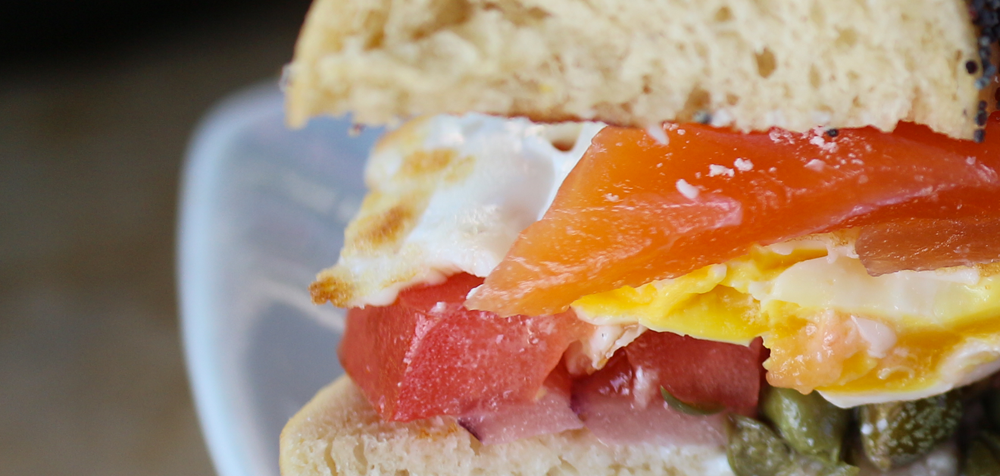
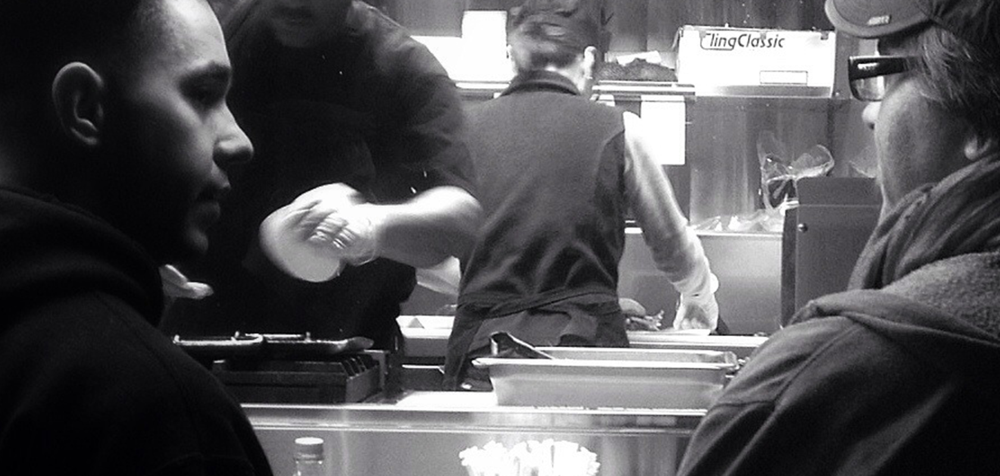

<div class="orbit" role="region" aria-label="Slide Le Bas Moteur" data-orbit>
  <ul class="orbit-container">
    <li class="is-active orbit-slide">
      
    </li>
    <li class="orbit-slide">
      
    </li>
    <li class="orbit-slide">
      
    </li>
  </ul>
  <button class="orbit-previous"><span class="show-for-sr">Précédent</span>&#9664;&#xFE0E;</button>
  <button class="orbit-next"><span class="show-for-sr">Suivant</span>&#9654;&#xFE0E;</button>
  <nav class="orbit-bullets">
    <button class="is-active" data-slide="0"><span class="show-for-sr">First slide details.</span><span class="show-for-sr">Current Slide</span></button>
    <button data-slide="1"><span class="show-for-sr">Second slide details.</span></button>
    <button data-slide="2"><span class="show-for-sr">Third slide details.</span></button>
  </nav>
</div>
